| Guideline: Data Model |
 |
|
| Related Elements |
|---|
OverviewData Models are used to design the structure of the persistent data stores used by the system. The Unified Modeling Language (UML) profile for database design provides database designers with a set of modeling elements that can be used to develop the detailed design of tables in the database and model the physical storage layout of the database. The UML database profile also provides constructs for modeling referential integrity (constraints and triggers), as well as stored procedures used to manage access to the database. Data Models might be constructed at the enterprise, departmental, or individual application level. Enterprise and departmental level Data Models can be used to provide standard definitions for key business entities (such as customer and employee) that will be used by all applications within a business or a business unit. These types of Data Models can also be used to define which system in the enterprise is the "owner" of the data for a specific business entity and what other systems are users of (subscribers to) the data. This guideline describes the model elements of the UML profile for database modeling used to construct a Data Model for a relational database. Because there are numerous existing publications on general database theory, it does not cover this area. For background information on relational Data Models and Object Models see Concept: Relational Databases and Object Orientation. Note: The data modeling representations contained in this guideline are based on the UML 1.3. At the time that this guideline was developed, the UML 1.4 data-modeling profile was not available. Stages of Data ModelingAs described in [NBG01], there are three general stages in the development of a Data Model: conceptual, logical, and physical. These stages of data modeling reflect the different levels of detail in the design of the persistent data storage and retrieval mechanisms of the application. A discussion of conceptual data modeling is provided in ConceptsConceptual Data Modeling. Summaries of logical and physical data modeling are provided in the next two sections of this guideline. Logical Data ModelingIn logical data modeling, the Database Designer is concerned with identifying the key entities and relationships that capture the critical information that the application needs to persist in the database. During the Use-Case Analysis, Use-Case Design, and Class Design tasks, the Database Designer and the Designer must work together to ensure that the evolving designs of the analysis and design classes for the application will adequately support the development of the database. During the Class Design task, the database designer and the designer must identify the set of classes in the Design Model that will need to persist data in the database. This set of persistent classes in the Design Model provides a Design Model View that, although different from the traditional Logical Data Model, meets many of the same needs. The persistent classes used in the Design Model function in the same manner as the traditional entities in the Logical Data Model. These design classes accurately reflect the data that must be persisted, including all of the data columns (attributes) that must be persisted and key relationships. This makes these design classes an excellent starting point for the physical database design. Creating a separate Logical Data Model is an option. However, in the best case it would end up capturing the same information in a different form. In the worst case it would not, and thus in the end might not meet the business needs of the application. In particular, if the database is intended to service a single application, then the application's view of the data might be the best starting point. The database designer creates tables from this set of persistent design classes to form an initial Physical Data Model. Still, situations might exist that would require the database designer to create an idealized design of the database that is independent from the application design. In this case, the logical database design is represented in a separate Logical Data Model that is part of the overall Artifact: Data Model. This Logical Data Model depicts the key logical entities and their relationships that are necessary to satisfy the system requirements for persisting data consistent with the overall architecture of the application. The Logical Data Model might be constructed using the modeling elements of the UML profile for database design described in later sections of this guideline. For projects that use this approach, close collaboration between the application designers and the database designers is absolutely critical to the successful development of the database design. The Logical Data Model might be refined by applying the standard rules for normalization as defined in Concept: Normalization prior to evolving the elements of the Logical Data Model to create the physical design of the database. The figure below depicts the primary approach of using the Design Model classes as the source of logical database design information for creating an initial Physical Data Model. It also illustrates the alternative approach of using a separate Logical Data Model.
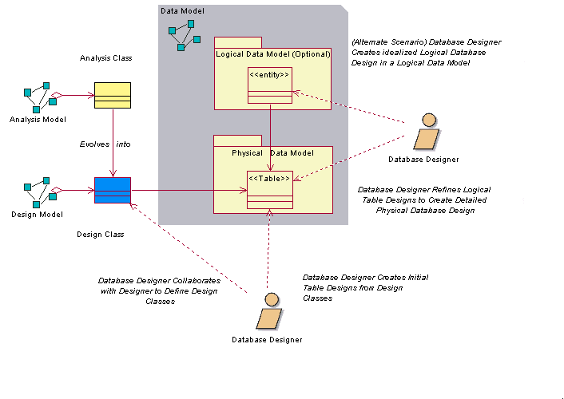 Logical Data Modeling Approaches Physical Data ModelingPhysical data modeling is the final stage of development in the design of the database. The Physical Data Model consists of the detailed database table designs and their relationships created initially from the persistent design classes and their relationships. The mechanics of performing the transformation of the Design Model classes to tables is discussed in Guideline: Forward-Engineering Relational Databases. The Physical Data Model is part of the Data Model; it is not a separate artifact. The tables in the Physical Data Model have well-defined columns, as well as keys and indexes as needed. The tables might also have triggers defined as necessary to support the database functionality and referential integrity of the system. In addition to the tables, stored procedures have been created, documented, and associated with the database in which the stored procedure will reside. The diagram below shows an example of some of the elements of the Physical Data Model. This example model is a part of the Physical Data Model of a fictional online auction application. It depicts four tables (Auction, Bid, Item, and AuctionCategory), along with one stored procedure (sp_Auction) and its container class (AuctionManagement). The figure also depicts the columns of each table, the primary key and foreign key constraints, and the indexes defined for the tables.
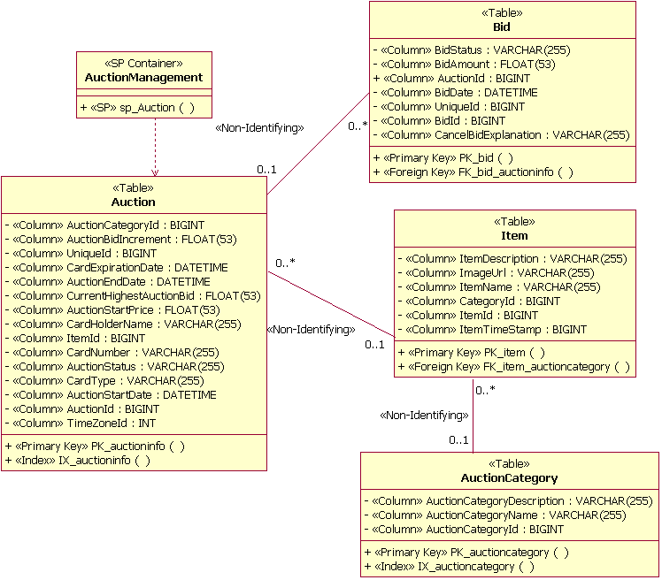 Example (Physical) Data Model Elements The Physical Data Model also contains mappings of the tables to physical storage units (tablespaces) in the database. The figure below shows an example of this mapping. In this example, the tables Auction and OrderStatus are mapped to a tablespace called PRIMARY. The diagram also illustrates modeling the realization of the tables to the database (named PearlCircle in this example).
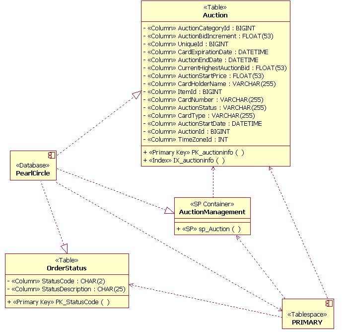 Example Data Storage Model Elements On projects in which a database already exists, the database designer can reverse-engineer the existing database to populate the Physical Data Model. See Guideline: Reverse-engineering Relational Databases for more information. Data Model ElementsThis section describes the general modeling guidelines for each major element of the Data Model based on the UML profile for database modeling. A brief description of each model element is followed by an example illustration of the UML model element. The Relationships section of this guideline includes a description of the usage of the model elements. PackageStandard UML packages are used to group and organize elements of the Data Model. For example, packages might be defined to organize the Data Model into separate Logical and Physical Data Models. Packages might also be used to identify logically related groups of tables in the Data Model that constitute the major data "subject areas" of importance to the business domain of the application being developed. The figure below shows an example of two subject area packages (Auction Management and UserAccount Management) used to organize views and tables in the Data Model.
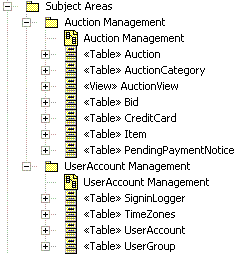 Subject Area Packages Example TableIn the UML profile for database modeling, a table is modeled as a class with a stereotype of <<Table>>. The columns in the table are modeled as attributes with the stereotype of <<column>>. One or more columns might be designated as a primary key to provide for unique row entries in the table. Columns might also be designated as foreign keys. Primary keys and foreign keys have associated constraints that are modeled as the stereotyped operations of <<Primary Key>> and <<Foreign Key>> respectively. The figure below depicts the structure of an example table used to manage information about items sold at auction in a fictional online auction system.
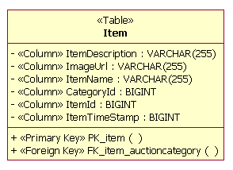 Table Example Tables might be related to other tables through the following types of relationships:
The Relationships section of this guideline provides examples of how these relationships are used. Information on how these types of relationships can be mapped to Design Model elements appears in Guideline: Reverse-engineering Relational Databases. TriggerA trigger is a procedural function designed to run as a result of some action on the table in which the trigger resides. A trigger is defined to execute when a row in the table is inserted, updated, or deleted. Additionally, a trigger is designated to execute either before or after the table command executes. Triggers are defined as operations in a table. The operations are stereotyped <<Trigger>>.
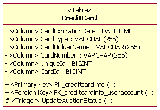 Trigger Example IndexIndexes are used as mechanisms for enabling faster access of information when specific columns are used to search the table. An index is modeled as an operation in the table with a stereotype of <<index>>. Indexes might be designated as unique and might be designated as clustered or unclustered. Clustered indexes are used to force the order of the data rows in the table to be aligned with the order of the index values. An example of an index operation (IX_auctioncategory) is shown in the figure below.
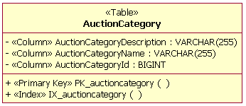 Index Example ViewA view is a virtual table with no independent persistent storage. A view has the characteristics and behaviors of a table and accesses the data in the columns from the table(s) with which the view has defined relationships. Views are used for providing more efficient access to information in one or more tables and also can be used to enforce business rules for restricting access to data in the tables. In the example below, an AuctionView has been defined as a "view" of information in the Auction table shown in the physical data modeling section of this guideline. Views are modeled as classes with the stereotype of <<view>>. The attributes of the view class are the columns from the tables referenced by the view. The datatypes of the columns in the view are inherited from the tables with a defined dependency with the view.
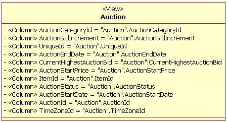 View Example DomainA domain is a mechanism used to create user-defined datatypes that can be applied to columns across multiple tables. A domain is modeled as a class with the stereotype <<Domain>>. In the example below, a domain has been defined for a "zip + 4" zipcode.
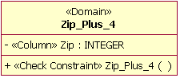 Domain Example Stored Procedure ContainerA stored procedure container is a grouping of stored procedures within the Data Model. A stored procedure container is created as a UML class that is stereotyped <<SP Container>>. Multiple stored procedure containers can be created in a database design. Each stored procedure container must have at least one stored procedure. Stored ProcedureA stored procedure is an independent procedure that typically resides on the database server. Stored procedures are documented as operations that are grouped into classes stereotyped as <<SP Container>>. The operations are stereotyped <<SP>>. The example below shows a single stored procedure operation (SP_Auction) in a container class named AuctionManagement. When designing stored procedures, the database designer must be cognizant of any naming conventions used by the specific RDBMS.
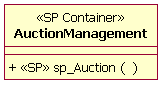 Stored Procedure Container and Stored Procedure Example TablespaceA tablespace represents the amount of storage space to be allocated to such items as tables, stored procedures and indexes. Tablespaces are linked to a specific database through a dependency relationship. The number of tablespaces and how the individual tables will be mapped to them depends on the complexity of the Data Model. Tables that will be accessed frequently might need to be partitioned into multiple tablespaces. Tables that do not contain large amounts of frequently accessed data might be grouped into a single tablespace. A tablespace container is defined for each tablespace. The tablespace container is the physical storage device for the tablespace. Although multiple tablespace containers can exist for a single tablespace, it is recommended that a tablespace container be assigned to only a single tablespace. Tablespace containers are defined as attributes to the tablespace; they are not explicitly modeled.
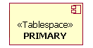 Tablespace Example
Schema
|
© Copyright IBM Corp. 1987, 2006. All Rights Reserved. |